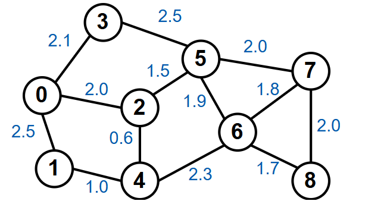
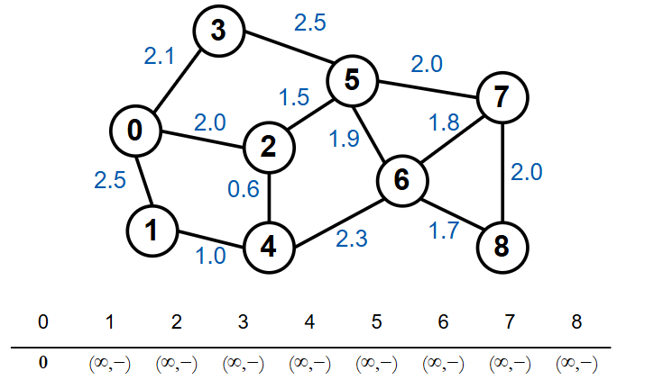
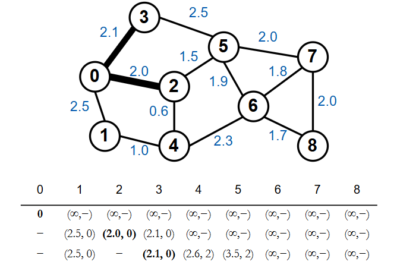
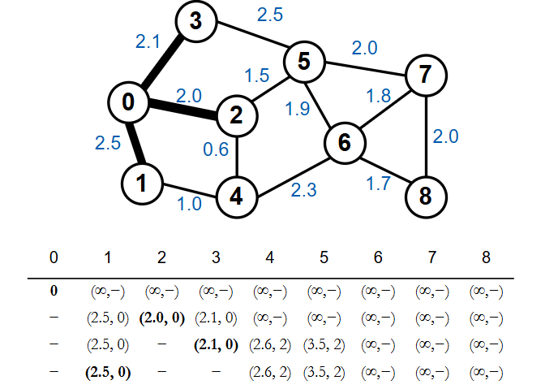
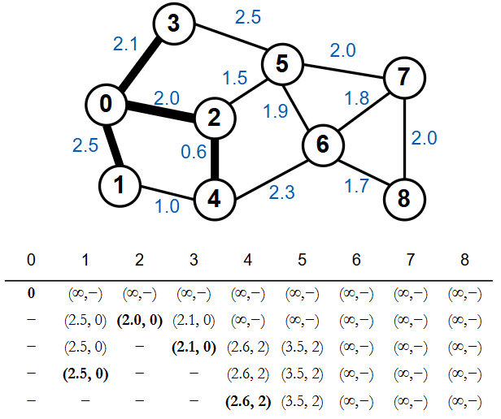
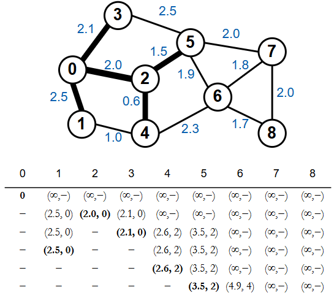
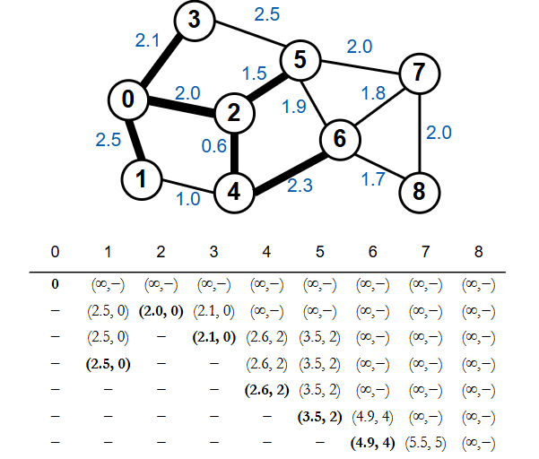
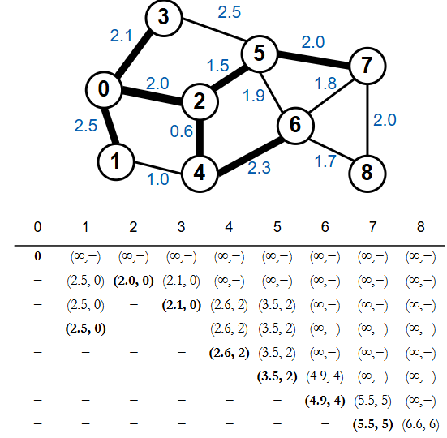
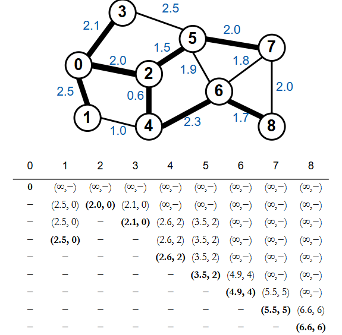

Thuật toán Dijkstra là một trong những thuật toán cổ điển để giải quyết bài toán tìm đường đi ngắn nhất từ một điểm cho trước tới tất cả các điểm còn lại trong đồ thị có trọng số. Trong bài viết này chúng ta cùng tìm hiểu ý tưởng cơ bản của thuật toán Dijkstra.
Ý tưởng
Thuật toán Dijkstra có thể giải quyết bài toán tìm đường đi ngắn nhất trên đồ thị vô hướng lẫn có hướng miễn là trọng số không âm.
Ý tưởng cơ bản của thuật toán như sau:
- Bước 1: Từ đỉnh gốc, khởi tạo khoảng cách tới chính nó là 0, khởi tạo khoảng cách nhỏ nhất ban đầu tới các đỉnh khác là +∞. Ta được danh sách các khoảng cách tới các đỉnh.
- Bước 2: Chọn đỉnh a có khoảng cách nhỏ nhất trong danh sách này và ghi nhận. Các lần sau sẽ không xét tới đỉnh này nữa.
- Bước 3: Lần lượt xét các đỉnh kề b của đỉnh a. Nếu khoảng cách từ đỉnh gốc tới đỉnh b nhỏ hơn khoảng cách hiện tại đang được ghi nhận thì cập nhật giá trị và đỉnh kề a vào khoảng cách hiện tại của b.
- Bước 4: Sau khi xét tất cả đỉnh kề b của đỉnh a. Lúc này ta được danh sách khoảng cách tới các điểm đã được cập nhật. Quay lại Bước 2 với danh sách này. Thuật toán kết thúc khi chọn được khoảng cách nhỏ nhất từ tất cả các điểm.
Minh họa Thuật toán Dijkstra
Để dễ dàng hiểu ý tưởng của thuật toán. Chúng ta cùng xem ví dụ với đồ thị vô hướng G. Thuật toán Dijkstra sẽ tìm khoảng cách từ đỉnh gốc 0 tới tất cả các đỉnh còn lại trong đồ thị G.
Đầu tiên, khởi tạo khoảng cách nhỏ nhất ban đầu tới các đỉnh khác là +∞ và khoảng cách tới đỉnh gốc là 0. Ta được danh sách các khoảng cách tới các đỉnh.
Chọn đỉnh 0 có giá trị nhỏ nhất, xét các đỉnh kề của đỉnh 0: Xét đỉnh 1, khoảng cách từ gốc đến đỉnh 1 là 2.5 < ∞ nên ghi nhận giá trị mới là (2.5,0) (nghĩa là khoảng cách đến đỉnh gốc hiện tại ghi nhận là 2.5, đỉnh kề liền trước là đỉnh 0). Xét tương tự cho đỉnh 2 và 3, ta được dòng thứ 2 trong bảng.

Sau khi xét tất cả các đỉnh ta chọn đỉnh 2 có khoảng cách nhỏ nhất và ghi nhận để xét tiếp. Tiếp tục xét đỉnh kề của 2 là đỉnh 4 và 5 với nguyên tắc nêu ở trên. Xét đỉnh 4, khoảng cách từ đỉnh gốc đến đỉnh 4 sẽ bằng khoảng cách từ đỉnh gốc tới đỉnh 2 cộng khoảng cách từ 2 đến 4. Nghĩa là 2.0+0.6=2.6 nên ta ghi nhận khoảng cách tại đỉnh 4 là (2.6,2). Xét tương tự cho đỉnh 5.
Lúc này ta chọn được đỉnh 3 có khoảng cách nhỏ nhất, xét đỉnh kề của đỉnh 3 là đỉnh 5. Khoảng cách từ gốc tới đỉnh 5 = 2.1 + 2.5 = 4.6 lớn hơn khoảng cách hiện tại được ghi nhận, vì vậy giá trị tại đỉnh 5 không đổi.
Đỉnh 1 là đỉnh được chọn tiếp theo, xét đỉnh kề của 1 là đỉnh 4. Khoảng cách từ đỉnh gốc không nhỏ hơn khoảng cách hiện tại nên ta không cập nhật gì ở đỉnh này.
Sau khi xét xong ta chọn được đỉnh 4 là đỉnh tiếp theo. Ta cập nhật giá trị mới cho đỉnh 6.
Chọn được đỉnh 5 là đỉnh nhỏ nhất, tiếp tục xét các đỉnh kề.
Đỉnh 6 là đỉnh tiếp theo được chọn.
Chọn đỉnh có khoảng cách nhỏ nhất là đỉnh 7.
Thuật toán kết thúc khi chọn được khoảng cách nhỏ nhất cho tất cả các đỉnh.
Để lại bình luận